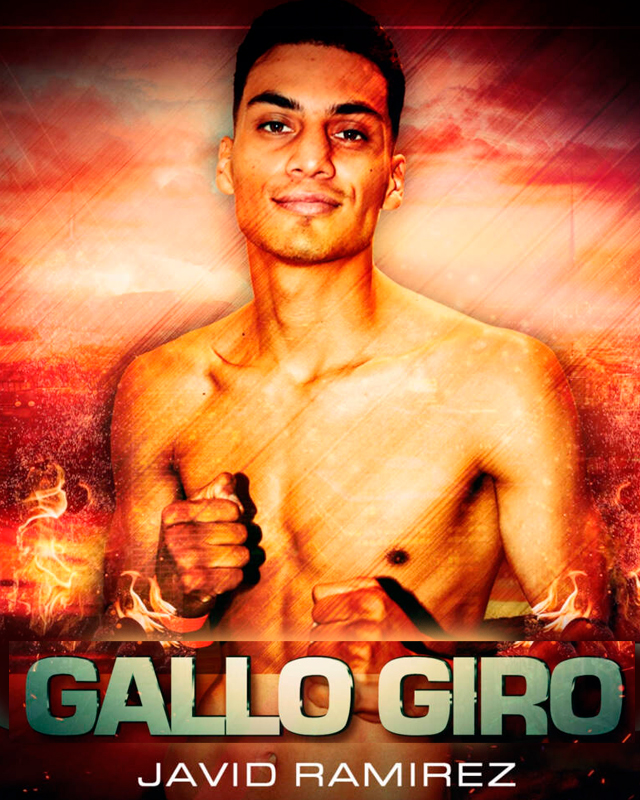

← Nuestros peleadores
Javid Ramirez · Gallo Giro

Gómez Palacio, Durango · 17-0-1, 9 KO’s
Un peleador con la disciplina y determinación de un campeón, el duranguense Javid Ramírez vivió una larga temporada en Guadalajara, donde conoció el boxeo y el estilo tapatío; logrando una larga y exitosa trayectoria en el boxeo amateur con múltiples medallas en Olimpiada Nacional; el salto al terreno de paga era natural para Ramírez Serrano; haciendo gala de sus habilidades en distintas plazas, alargando su invicto hasta que su camino se cruzó con el ex campeón mundial ‘King’ Carlos Molina tras su primer campamento en Coachella Valley, California; bajo las órdenes del afamado entrenador Joel Díaz, quien ha logrado explotar sus cualidades ofensivas.